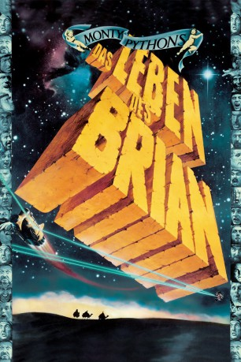

#4792 Das Leben des Brian
Alternativ: Life of Brian
 
 IMDB-Wertung: 8.1 / 10
IMDB-Wertung: 8.1 / 10  IMDB-TOP-Platzierung: 195
IMDB-TOP-Platzierung: 195  Metascore: 0
Metascore: 0 
Die Geburt von Brian von Nazareth stand schon unter einem Stern, allerdings unter dem falschen: die heiligen drei Könige hatten nämlich zunächst den Stall verwechselt. Jahre später ist Jesus sehr populär, doch Brian wohnt immer noch zu Hause. Weil außer den regelmäßigen Steinigungen, zu denen ihn seine Mutter schleppt, nichts los ist, versucht er sich der Widerstandsgruppe Volksfront von Judäa anzuschließen. Die entpuppt sich jedoch als kommunistisch angehauchter Haufen von Laberköpfen, die weniger an konkreten Aktionen als an endlosen Diskussionen interessiert sind. Als sie sich dann endlich aufraffen, kommt man der Konkurrenz, der judäischen Volksfront, in die Quere und Brian landet als Gefangener vor Pilatus, dessen Sprachfehler allerdings ständig sämtliche Wachen vor Lachen in die Knie zwingt ...
Jahr: 1979
Dauer: 93 Minuten
FSK: 12
Land: England Studio: CICTonspuren:
Untertitel:
Auflösung: 1080p (1920x1040) Größe: 9676 MB
Genre: Komödie, Weihnachten
Regisseur: Terry Jones
Drehbuch: Lars von Trier
Soundtrack:
Darsteller:
 Graham Chapman als Wise Man #2 / Brian Cohen / Biggus Dickus
Graham Chapman als Wise Man #2 / Brian Cohen / Biggus Dickus John Cleese als Wise Man #1 / Reg / Jewish Official / First Centurion / Deadly Dirk / Arthur
John Cleese als Wise Man #1 / Reg / Jewish Official / First Centurion / Deadly Dirk / Arthur Terry Gilliam als Man Even Further Forward / Revolutionary / Jailer / Blood & Thunder Prophet / Frank / Audience Member / Crucifee
Terry Gilliam als Man Even Further Forward / Revolutionary / Jailer / Blood & Thunder Prophet / Frank / Audience Member / Crucifee Eric Idle als Mr. Cheeky / Stan aka Loretta / Harry the Haggler / Culprit Woman / Warris / Intensely Dull Youth / Jailer's Assistant / Otto / Lead Singer Crucifee
Eric Idle als Mr. Cheeky / Stan aka Loretta / Harry the Haggler / Culprit Woman / Warris / Intensely Dull Youth / Jailer's Assistant / Otto / Lead Singer Crucifee Terry Jones als Mandy Cohen / Colin / Simon the Holy Man / Bob Hoskins / Saintly Passer-by / Alarmed Crucifixion Assistant
Terry Jones als Mandy Cohen / Colin / Simon the Holy Man / Bob Hoskins / Saintly Passer-by / Alarmed Crucifixion Assistant Michael Palin als Wise Man #3 / Mr. Big Nose / Francis / Mrs. A / Ex-Leper / Announcer / Ben / Pontius Pilate / Boring Prophet / Eddie / Shoe Follower / Nisus Wettus
Michael Palin als Wise Man #3 / Mr. Big Nose / Francis / Mrs. A / Ex-Leper / Announcer / Ben / Pontius Pilate / Boring Prophet / Eddie / Shoe Follower / Nisus Wettus Terence Bayler als Gregory
Terence Bayler als Gregory Carol Cleveland als Mrs. Gregory
Carol Cleveland als Mrs. Gregory Kenneth Colley als Jesus
Kenneth Colley als Jesus- Gwen Taylor als Mrs. Big Nose
- Chris Langham als Alfonso / Giggling Guard
- Spike Milligan als Spike
 George Harrison als Mr. Papadopolous , uncredited
George Harrison als Mr. Papadopolous , uncredited- Neil Innes als A Weedy Samaritan
 Charles McKeown als False Prophet / Blind Man / Giggling Guard / Stig
Charles McKeown als False Prophet / Blind Man / Giggling Guard / Stig John Young als Matthias, Son of Deuteronomy of Gath
John Young als Matthias, Son of Deuteronomy of Gath- Sue Jones-Davies als Judith
- Peter Brett als
- John Case als Pilate's Wife
- Andrew MacLachlan als Another Official Stoners Helper / Giggling Guard
- Bernard McKenna als Parvus / Official Stoners Helper / Giggling Guard
- Charles Knode als Passer-by , uncredited
Datei: X:\Person\Monty Python\Leben des Brian, Das (1979, FSK12, 1920x1040).mkv seit 18.11.2016
Festplatte: HD Collection-7+mehr(A-Z)+Person
 Es gibt insgesamt 11 Filme in der Gruppe 'Person\Monty Python'
Es gibt insgesamt 11 Filme in der Gruppe 'Person\Monty Python'